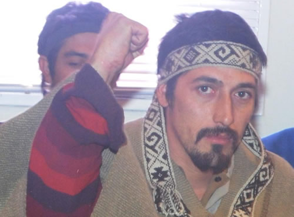

Real Chubut - Agencia de Noticias


Comunicado público de Jones Huala

COMUNICADO PUBLICO DEL LONCO
MariMari pu Lamien, ka pu Peñi
MariMari Monku ta Che, Apuen Itrocom Tañi Che
Ca Pu Hueney:
A todas las Mujeres y Hombres Mapuche
A Todo mi Pueblo Mapuche
A los Amigos Simpatizantes:
Desde la Prisión Política, Arbitraria, Ilegítima y Abusiva, Dos veces Sometido al mismo Proceso, Perseguido por Dos Estados, Colonialistas y Capitalistas, deseo comunicar:
Asumiendo mi Condición Integra Digna y Plena de Lonko y Weichafe de la Nación Mapuche, Reafirmando la Línea Política Filosófica del Movimiento Mapuche Autónomo del Puel Mapu (M.A.P.), las Comunidades en Resistencia del Departamento de Cushamen, Comunidades en Resistencia de la Comarca, entre tantas otras; y Orgulloso del Accionar de la RAM y de toda Nuestra Gente Consciente y de Otros Pueblos Simpatizantes.
Comunico que desde hace OCHO días estoy en Huelga de Hambre iniciada con un peso de 76kg, 500gms, el cual ha disminuido 4kg.500gms, tome esta decisión al haberse agotado todas las vías para la superación de tan evidente Injusticia, llamando Abierta y Explícitamente a la Rebelión de todo Nuestro Pueblo a través de la Dirección Estratégica de La Vanguardia de Weichafes Organizados desde el Kuifirakizuam y Az Mapu.
Todas las Formas de Lucha son Válidas y además Urgentes, ya no se puede Tolerar tanto Atropello, Despojo, Marginalidad y Violencia Opresora. La Cárcel y la Represión intentan sembrar Temor en Nuestro Pueblo, no debemos caer en la Trampa de su Violencia, debemos responder con Legítima Defensa, como Valientes, no como Cobardes ni Traidores.
Ellos quieren silenciarnos, mantenernos sumisos en el tramposo juego de la burocracia y la falsa e hipócrita Legalidad Burguesa, leyes que no dudan en romper cuando el Rico lo Ordena, allí los Jueces se olvidan el Estado de Derecho convirtiéndose en Secuestradores, y Lacayos de Terratenientes y Empresarios; ¿Por qué la Mujer de Macri no está Presa? Si es responsable de Trata y Esclavitud, en el siglo XXI, por qué Moldes está en el Consejo de la Magistratura? y no preso por narcotráfico, Fascista y Pro Golpista? ¿Por qué no hay Policías Presos
en el intento de Homicidio en enero en Pu Lof Resistencia Cushamen?
Si se permite el Doble Juzgamiento, se permite la ilegalidad del Poder Formal, es decir, no solo no habrá Justicia para Nosotros sino para nadie, burlan sus propias Leyes, cuando quieren, como lo hicieron las Dictaduras Militares en los 70.
Porque las Leyes son de Winka Ricos para salvaguardar su Propiedad Privada y su Capital que es acumulado a costa de nuestra Sangre y Sudor, y no para Administrar Justicia.
La escalada de Represión se ha elevado, más aun en estos últimos tiempos. Como sucedió desde mi última detención, que evidencia la Persecución Política para con todos los sectores; en Buenos Aires, se encarcelaron y golpearon a 7 manifestantes quienes reclamaban mi Libertad. En la
ciudad de Esquel, en la marcha organizada por vecinos y Pueblo Mapuche, fueron hostigados constantemente por la policía hasta acabar con disparos, golpes e intento de detención de mujeres.
El 27 de julio de 2017 epu zomo ca pichizomo (dos mujeres y una niña) integrantes de Pu Lof en resistencia departamento Cushamen se hicieron presentes en el juzgado federal de Esquel para poder dialogar con el juez federal Guido Otranto sobre su responsabilidad (Ley 24.767, articluo 114) en la nueva detención ilegal llevada adelante por el juez federal Gustavo Villanueva en marco del proceso de extradición que en ese momento estaba en tratamiento en la Corte Suprema.
No tuvieron la más mínima disposición a dialogar con las lamgen, sino que además fueron maltratadas por su secretaria personal María Silvina Salvaré quien llama a la policía a que las
acompañe a retirarse del lugar de forma amenazante.
Manifestantes que piden mi libertad en Caleta Olivia en una asamblea y marcha son dispersados por las fuerzas policiales, que les impidieron su paso por el centro de la ciudad.
Y más aún, en la ciudad de Bariloche, en el Juzgado Federal, mientras Autoridades de diferentes Comunidades Mapuche, dialogaban con el Secretario del Juez Federal Gustavo Villanueva, para obtener información al haberse cumplido 30 días de mi detención ilegal, en la afueras el lugar se Militarizó, con presencia del COER, Policía Aeroportuaria, Gendarmería Nacional, Policia Federal y Policía de Rio Negro, sin mediar palabra hostigan y disparan a pu peñi ka pu lamien,(hermanos y hermanas) algunos alcanzan a refugiarse, aun sin importarles los gritos de dolor de las mujeres, las detienen, golpean,
a una de ellas le quiebran dos dientes, otra recibe disparos en su cuerpo, de esta situación quedan seis peñi/lamgen detenidos en la PSA. Más tarde al conocerse esta aberrante noticia, hermanos de otras comunidades se acercan a saber de la situación y tres de ellos son obligados a tirarse al suelo, son
arrestados y trasladados al Escuadrón 34 de Bariloche.
Hostigamiento constante con provocaciones, tiroteos por las madrugadas para tener a la gente en alerta, incertidumbre, continuas amenazas en el territorio recuperado, la compañía de Benetton, uno de los más grades latifundistas en la argentina, dispone de las fuerzas públicas para su propio beneficio, con injerencia en los medios de comunicación, el poder político, judicial y económico del país. Varios intentos de allanamiento, que son desalojos encubiertos, produciéndose destrucción de las rukas,(viviendas), secuestro desde animales, herramientas, material bibliográfico, incendiando material de construcción, ropa, calzado, juguetes, semillas orgánicas, abrigo, muebles, etc.
Un militante solidario con los pueblos en lucha SANTIAGO MALDONADO, quien se encontraba en la Pu Lof es uno más de los que corren entre las balas tratando de resguardarse, pero es alcanzado, golpeado brutalmente y detenido por la gendarmería nacional, desde ese 1 de agosto el estado no se hace responsable de dar una respuesta de su paradero. Cualquier peñi o lamien que se encuentran resistiendo podría haber sido Santiago, la Cacería de Mapuches ya ha comenzado.
Desde ese momento el territorio sigue fuertemente militarizado por la misma gendarmeria que desaparecio a Santiago.
Desde esta perspectiva la única vía es la Rebelión, para Restablecer Derechos Humanos de todos los Desposeídos, y confrontar la Ultra Derecha Inhumana, atornillada al Servicio del Imperialismo y el Capital.
Son responsables directos de la perpetuación de estos conflictos los Jueces, Fiscales, Gobernadores Provinciales y la Gobernación del Ranco, en Chile, la Justicia Chilena debe reconocer la Índole Política por lo cual me están juzgando allí, también lo son Ministros de Seguridad y Presidentes.
Sí; Reconozco a los Estados, como Coloniales Genocidas, Capitalistas y Lame botas de los Gringos.
Todos los Mapuches formamos parte de la Resistencia Ancestral porque como nuestros antepasados nos Resistimos a Morir como Pueblo Ancestral que somos.
APARICION CON VIDA DE SANTIAGO MALDONADO, Secuestrado por la gendarmería.
LONKO FACUNDO JONES HUALA
Esquel, Chubut, Puelmapu, 7 de Agosto de 2017.
PUBLICIDAD